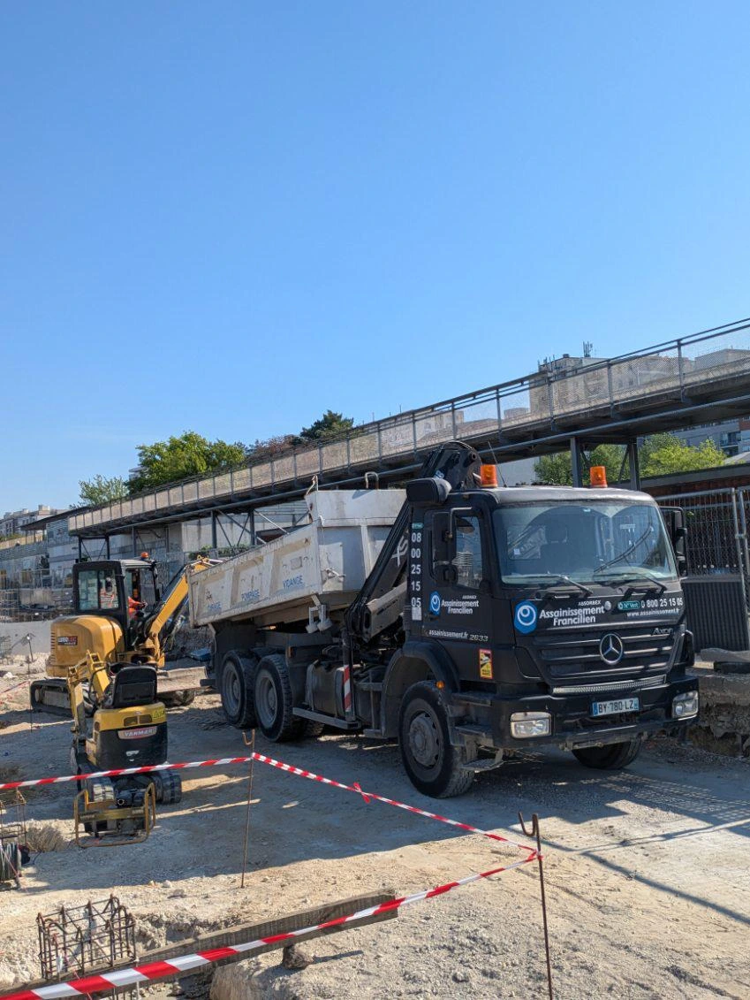

Spécialiste de l’assainissement en Île-de-France
Pour tous vos besoins en curage de canalisations, vidange de fosse septique, entretien de pompe de relevage, ou travaux de VRD et raccordement, Assainissement 77 intervient dans toute l’Île-de-France, y compris à Paris. Nous proposons des solutions ponctuelles ou des contrats annuels adaptés à vos installations. Grâce à un matériel performant et une équipe expérimentée, nous garantissons des interventions fiables, efficaces et toujours conformes aux normes en vigueur, afin d’assurer la pérennité de vos équipements.
NOS VEHICULES


RÉALISATIONS


FAITES CONFIANCE À NOTRE EXPERTISE EN ASSAINISSEMENT
En Seine-et-Marne (77), notre équipe d’experts en assainissement vous assure des interventions fiables, rapides et durables. Formés et expérimentés, nos techniciens répondent à tous vos besoins : curage de canalisations, vidange de fosses septiques, installation et entretien de pompes de relevage, raccordements et travaux de VRD. Chaque intervention est réalisée avec rigueur et dans le respect des normes, pour garantir le bon fonctionnement et la longévité de vos installations.
NOTRE ÉQUIPE
CONTACTEZ - NOUS

NOS PARTENAIRES


QUESTIONS FREQUENTES
Aquaserv Assainissement 77 est une entreprise specialisee dans tous les travaux d'assainissement en Seine-et-Marne et en Ile-de-France. Forts de notre experience, nous intervenons pour le curage de canalisations, la vidange de fosses septiques, l'installation de pompes de relevage, les travaux de VRD et le raccordement au reseau public.
Nous intervenons dans l'ensemble de la Seine-et-Marne (77) ainsi que dans toute l'Ile-de-France, y compris Paris. Notre equipe se deplace rapidement chez les particuliers, professionnels et collectivites pour tous types de travaux d'assainissement.
Notre flotte de vehicules comprend des camions hydrocureurs, des pompes haute pression et des equipements de pointe pour realiser tous types d'interventions : curage, pompage, inspection camera, debouchage et travaux de terrassement. Ce materiel professionnel garantit des interventions efficaces et durables.
Oui, nous proposons des contrats d'entretien annuels adaptes a vos besoins. Ces contrats permettent de planifier des interventions regulieres (vidange, curage preventif) a tarif preferentiel, garantissant ainsi le bon fonctionnement de vos installations sur le long terme.
Absolument. Toutes nos interventions sont realisees dans le strict respect des normes sanitaires et environnementales en vigueur. Nos techniciens sont formes et experimentes pour garantir des travaux conformes aux reglementations locales et nationales.